Publications
Research Articles
-
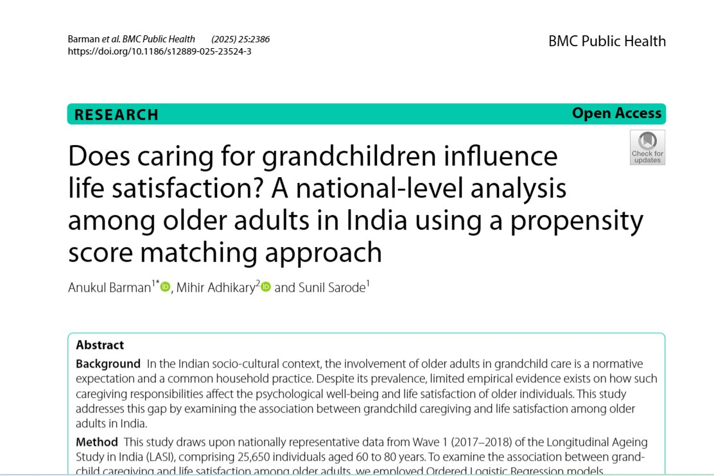
Does caring for grandchildren influence life satisfaction?
A national-level analysis among older adults in India using a propensity score matching approach.
-
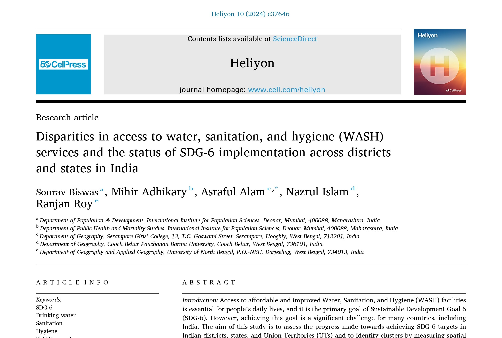
Disparities in access to WASH services and the status of SDG-6 implementation
Disparities in access to water, sanitation, and hygiene services across districts and states in India.
-
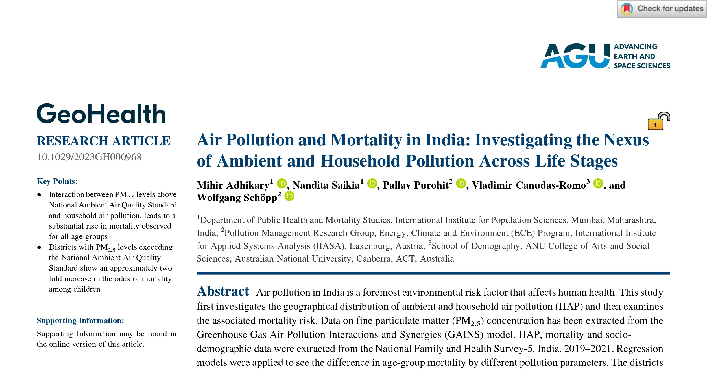
Air Pollution and Mortality in India
Investigating the nexus of ambient and household pollution across life stages.
-
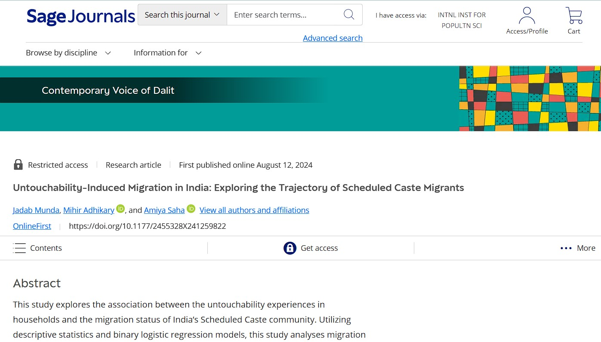
Untouchability-Induced Migration in India
Exploring the trajectory of Scheduled Caste migrants.
-
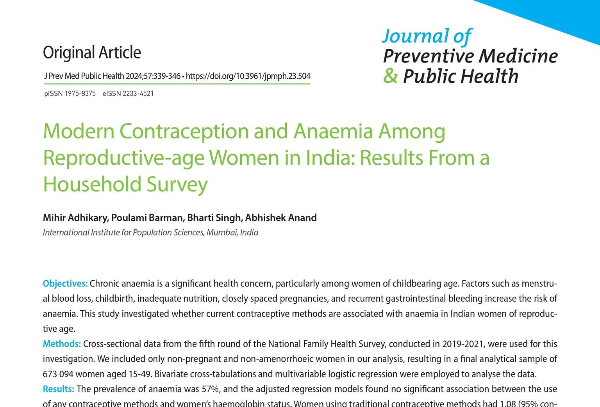
Modern Contraception and Anaemia
Anaemia among reproductive-age women in India: results from a household survey.
-
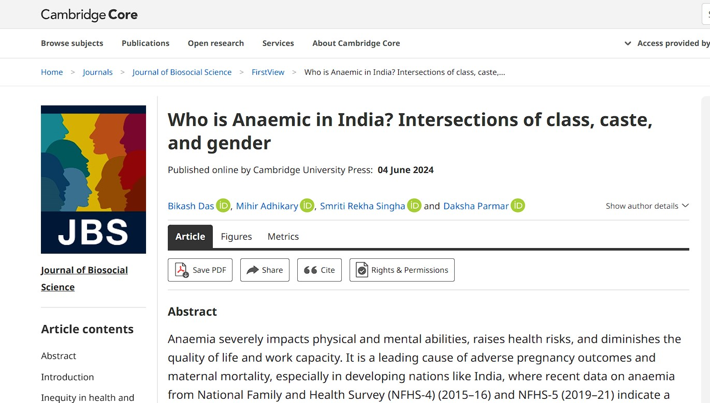
Who is Anaemic in India?
Intersections of class, caste, and gender in anaemia burden across India.
-
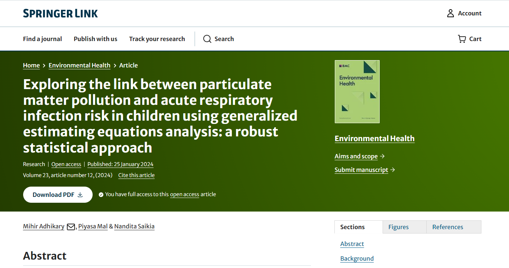
Particulate Matter Pollution and Respiratory Infection in Children
Linking PM exposure to acute respiratory infection risk using generalized estimating equations.
-
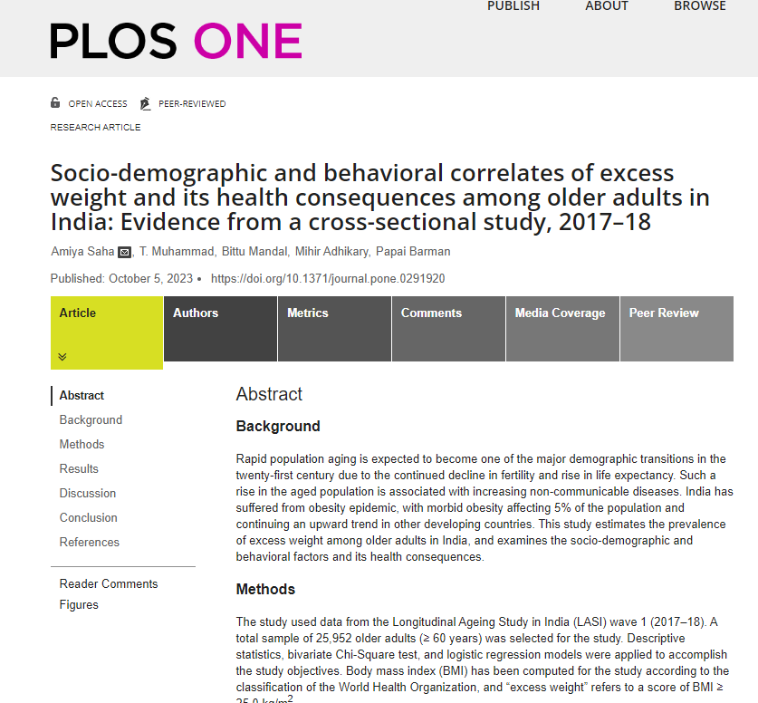
Excess Weight among Older Adults in India
Socio-demographic and behavioural correlates of excess weight and its health consequences, 2017–18.
-
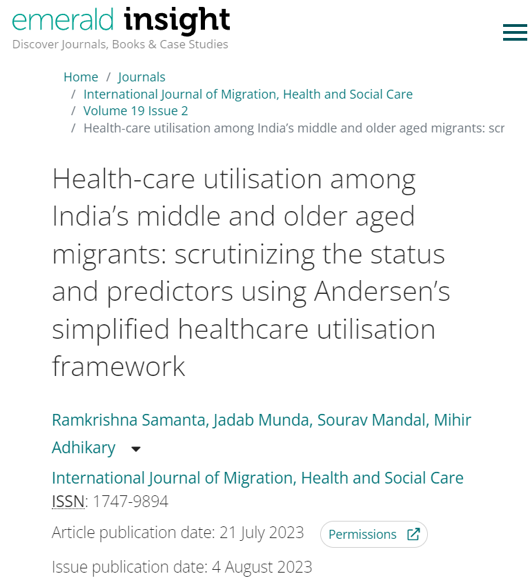
Health Care Utilization by Elderly Migrants
Predictors of healthcare use among India's middle and older-aged migrants using Andersen's framework.
-
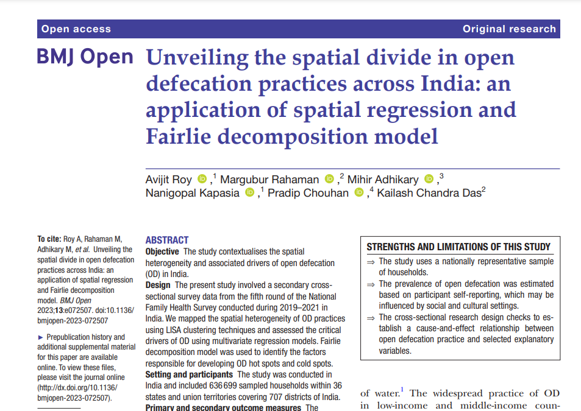
Open Defecation Practice in India
Spatial divide in open defecation practices: spatial regression and Fairlie decomposition analysis.
-
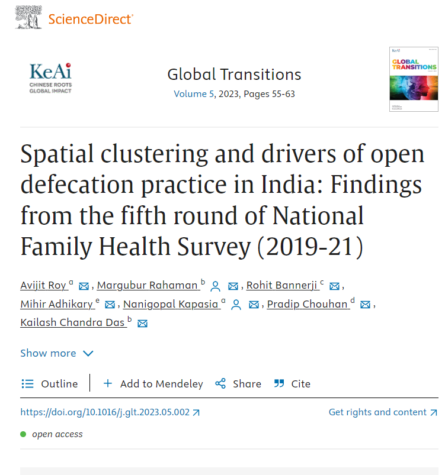
Drivers of Open Defecation Practice in India
Spatial clustering using NFHS-5 data, 2019–21.
-
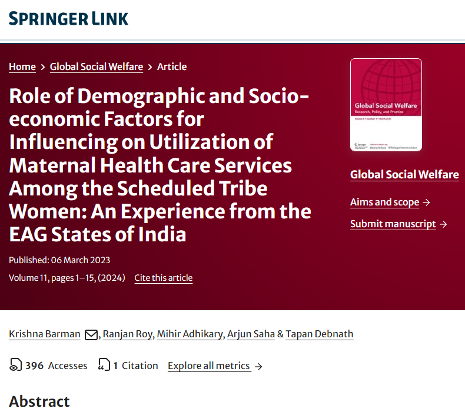
Maternal Health Care Utilization by Scheduled Tribe Women
Demographic and socioeconomic factors in EAG states of India.
-
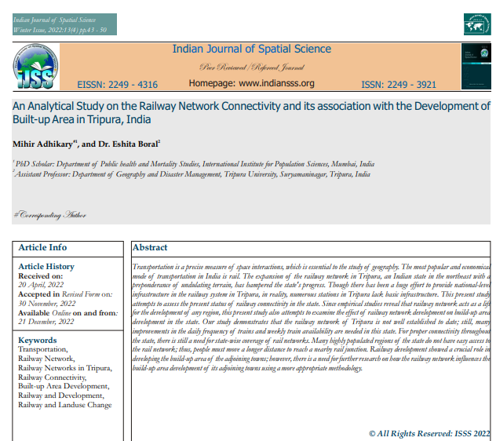
Railway Network Development in Tripura
Railway connectivity and its association with the development of built-up area in Tripura, India.
Book Chapters
-
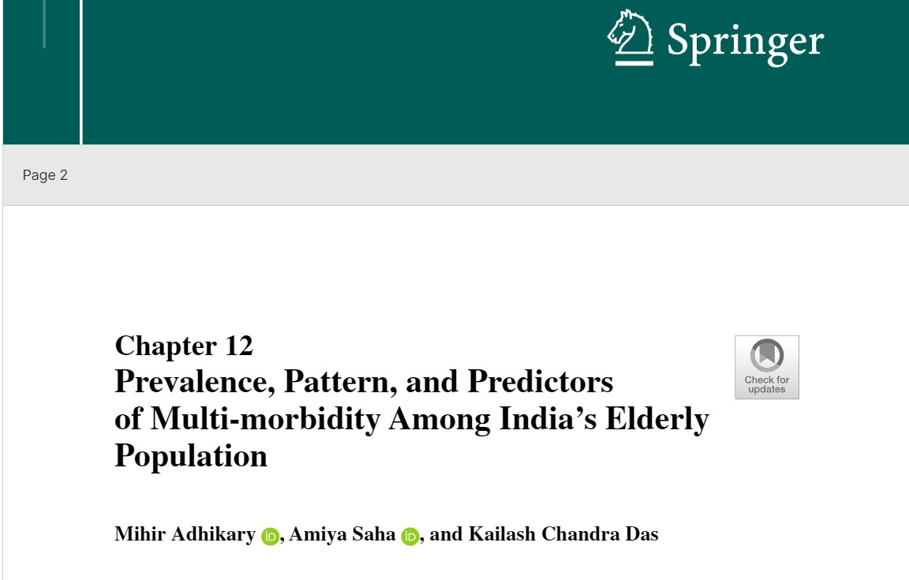
Multi-morbidity Among India's Elderly Population
Prevalence, pattern, and predictors of multi-morbidity among India's elderly population.
-
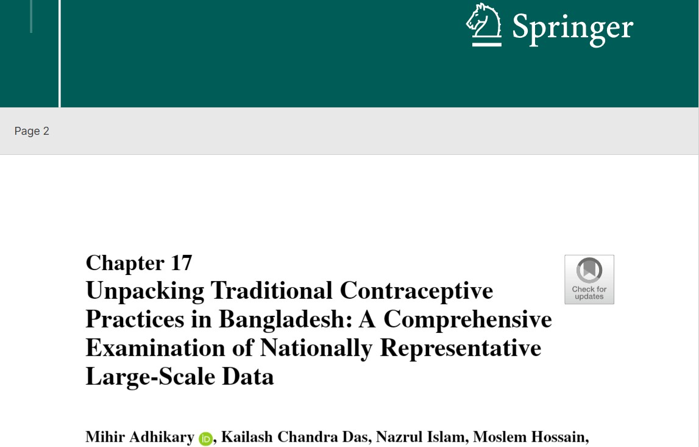
Unpacking Traditional Contraceptive Practices in Bangladesh
A comprehensive examination of nationally representative large-scale data.